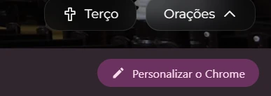
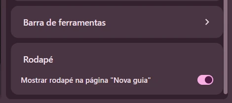
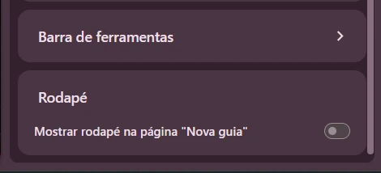

Instale o Ora
No computador, abra este guia no navegador em que você quer usar o Ora. Escolha o navegador abaixo para ver como instalar e ativar a extensão.
Google Chrome
- Abra a página do Ora na Chrome Web Store e clique em Usar no Chrome.
- Revise as permissões e clique em Adicionar extensão.
- Clique em + na barra de abas. Se o Chrome pedir para confirmar a mudança na nova guia, clique em Manter alterações.
Já instalou, mas o Ora não abriu? Digite chrome://extensions na barra de endereço, ative Ora – Nova Aba e abra outra aba.
A aparência e os recursos do Ora podem variar conforme a versão disponível na loja.
Como ocultar o rodapé do Chrome
Se aparecer uma barra com o nome do Ora e o botão Personalizar o Chrome, o Ora já está ativo. Ocultar esse rodapé é opcional.
-
Na nova guia, clique em Personalizar o Chrome, no canto inferior direito.

-
No painel lateral, role até a seção Rodapé.

-
Desative Mostrar rodapé na página “Nova guia” e feche o painel.

Mozilla Firefox
Use o Firefox 140 ou mais recente.
- Abra a página do Ora na loja de extensões do Firefox e clique em Adicionar ao Firefox.
- Revise as permissões e confirme em Adicionar.
- Abra uma nova aba pelo botão +. Se o Firefox perguntar se você quer manter a mudança, confirme.
O Ora não abriu? Digite about:addons, escolha Extensões e confira se Ora – Nova Aba está ativo. Se a Proteção pedir acesso aos sites, confira a seção Permissões do Ora nessa mesma página.
Microsoft Edge
- No Edge, abra a página do Ora na Chrome Web Store e clique no botão para obter a extensão.
- Se aparecer o aviso Permitir extensões de outras lojas, clique em Permitir. Revise as permissões e confirme em Adicionar extensão.
- Se o Edge avisar que desativou o Ora, escolha Ativar extensão. Depois, clique em + e mantenha a mudança na nova aba se houver outro aviso.
O aviso sumiu ou o Ora não abriu? Digite edge://extensions, ative Ora – Nova Aba e abra outra aba.
Brave
- No Brave, abra a página do Ora na Chrome Web Store e clique em Adicionar ao Brave.
- Revise as permissões e confirme em Adicionar extensão.
- Abra uma nova aba pelo botão + e confirme a mudança se o Brave pedir.
O Ora não abriu? Digite brave://extensions, confira se Ora – Nova Aba está ativo e abra outra aba.
Outros navegadores
A disponibilidade depende de o navegador aceitar extensões da loja indicada e permitir que elas controlem a página de nova aba.
- Vivaldi
- Instale pela Chrome Web Store. Depois, em Configurações → Abas → Página de nova aba, marque Controlada pela extensão. Ajuda do Vivaldi.
- Opera e Opera GX
- A ajuda do Opera explica como instalar pela Chrome Web Store. A instalação, por si só, pode deixar a página padrão do Opera no lugar. Para usar o Ora como nova aba, prefira um dos navegadores com guia acima.
- Arc
- Se a Chrome Web Store oferecer a instalação, adicione o Ora e abra uma nova aba para verificar o resultado. O suporte à substituição da nova aba pode variar.
- Zen
- Abra a loja do Firefox no Zen. Se a instalação estiver disponível, siga os passos do Firefox e verifique se o Ora abre em uma nova aba.
- LibreWolf
- Abra a loja do Firefox no LibreWolf e siga os passos do Firefox. Confira na loja se a versão é compatível.
Ainda abre a página padrão?
Teste em uma janela normal do mesmo perfil em que instalou o Ora. Se você usa outra extensão que troca a nova aba, desative-a temporariamente e abra uma aba para testar.
Entenda as permissões do Ora